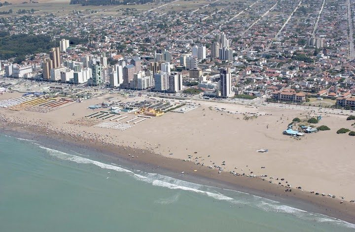

아르헨티나 네코체아 배전 협동조합 '우시나 포풀라르', 조합 땅에 3MW 태양광 부지 정리 시작…해안 마을 500kW도 추진

도매시장 전력 구매비 줄여 배전망·변압기 교체에 돌린다는 구상…같은 주 발카르세 전기협동조합도 본관 지붕 패널 60장 이어 30ha 부지 단지 구상, 두 조합 모두 사업비·일정은 안 밝혀
아르헨티나 부에노스아이레스주 네코체아의 배전 협동조합 '우시나 포풀라르 협동조합 세바스티안 데 마리아(Usina Popular Cooperativa Sebastián de María)'가 조합 소유 땅에 3MW 규모 태양광 발전소를 세우기 위한 부지 정리와 평탄화 작업을 시작했다. 조합은 해안 마을 아레나스베르데스(Arenas Verdes)에도 500kW 태양광을 짓는 방안을 땅 주인들과 협의하고 있으며, 주 정부의 분산형 발전 촉진 프로그램(PROINGED) 안에서 검토 중인 이 설비는 배전선 끝자락의 전압을 끌어올리고 공급을 보강하는 역할도 맡게 된다. 조합 쪽은 전력시장 규제 완화 뒤 도매시장에서 전기를 사 오는 비용이 가장 큰 지출 가운데 하나가 됐다며, 직접 만든 전기로 구매비를 줄이고 아낀 돈을 배전망과 전선·변압기 교체에 쓰겠다는 구상이다. 이 계획은 배전 협동조합이 조합원에게 공급할 재생에너지를 직접 생산할 수 있게 한 주 법 15.665가 시행된 것과 같은 시기에 알려졌다. 같은 주 발카르세에서 2만7,000명 넘는 조합원에게 전기를 공급하는 발카르세 전기협동조합(Cooperativa de Electricidad General Balcarce)은 2025년 4월 본관 건물에 태양광 패널 60장으로 첫 발전 설비를 가동했으며, 당시 마리오 소텔로(Mario Sotelo) 조합장은 "협동조합이 전기를 스스로 감당하는 오랜 꿈을 이루고 있다"고 말하면서 10~15년에 걸쳐 조합원용 전기를 생산하고 조합 소유 30ha 부지에 태양광 단지를 세울 수 있다는 구상을 밝혔다. 두 조합 모두 사업비와 착공·준공 일정, 새 법에 따른 허가 신청이나 주립은행 융자 이용 여부는 밝히지 않았고, 새 법이 곧바로 사업 승인이나 새 투자로 이어지는 것은 아니어서 실현 여부는 조합의 결정과 인허가, 자금 조건에 달려 있다.
시민에너지 관점
조합 땅의 3MW와 배전선 끝의 500kW는 전기를 사다 나눠 주기만 하던 협동조합이 아낀 구매비를 전선과 변압기 교체에 돌리겠다는 계획이어서, 발전으로 생긴 여유가 외부 주주의 배당이 아니라 조합원이 함께 쓰는 지역 망으로 돌아가는 구조다. 작은 배전 조합이 발전 설비까지 떠안으면 위험이 커진다는 우려가 나올 수 있지만, 전압이 약한 배전선 끝에 작은 설비를 두는 방식은 멀리서 큰 설비를 끌어오기보다 지역 망의 문제를 가까운 곳에서 푸는 길로 보인다. 아낀 돈을 어디에 쓸지 조합원이 함께 정할 수 있는 것도 이용자가 곧 주인인 협동조합이기 때문이다. 국내 시민발전도 발전 수익을 배당으로 끝내지 말고 마을 전기 설비와 에너지 효율 개선에 다시 쓰는 몫을 정관에 정하는 데서 시작해야 한다.
출처: Diario Cuatro Vientos 2026-10-30 기자 미표기 원문 보기
출처: Radio Gabal 2026-10-30 프랑코 폰세(Franco Ponce) 원문 보기
アルゼンチン・ネコチェアの配電協同組合「ウシナ・ポプラル」、組合所有地で3MW太陽光の整地を開始…海辺の集落で500kWも推進
卸売市場からの電力購入費を減らし配電網・変圧器の更新に回す構想…同じ州のバルカルセ電力協同組合も本館屋根のパネル60枚に続き30haの用地で発電所を構想、両組合とも事業費・日程は明らかにせず
アルゼンチン・ブエノスアイレス州ネコチェアの配電協同組合「ウシナ・ポプラル協同組合セバスティアン・デ・マリア（Usina Popular Cooperativa Sebastián de María）」が、組合所有の土地に3MW規模の太陽光発電所を建てるため、用地の整理と整地作業を始めた。組合は海辺の集落アレナス・ベルデス（Arenas Verdes）にも500kWの太陽光を建てる案を地権者と協議しており、州政府の分散型発電促進プログラム（PROINGED）の枠内で検討中のこの設備は、配電線の末端の電圧を引き上げて供給を補強する役割も担う。組合側は、電力市場の規制緩和後、卸売市場から電気を買う費用が最大の支出の一つになったとして、自ら発電して購入費を減らし、浮いた資金を配電網や電線・変圧器の更新に充てる構想だ。この計画は、配電協同組合が組合員に供給する再生可能エネルギーを自ら生産できるようにした州法15.665の施行と同じ時期に明らかになった。同じ州のバルカルセで2万7,000人を超える組合員に電気を供給するバルカルセ電力協同組合（Cooperativa de Electricidad General Balcarce）は、2025年4月に本館の建物に太陽光パネル60枚で最初の発電設備を稼働させており、当時マリオ・ソテロ（Mario Sotelo）組合長は「協同組合が電気を自ら賄うという長年の夢を実現しつつある」と述べ、10～15年かけて組合員向けの電気を生産し、組合所有の30haの用地に太陽光発電所を建てる可能性があるとの構想を示した。両組合とも事業費や着工・完成の日程、新法に基づく許可申請や州立銀行の融資を利用するかどうかは明らかにしておらず、新法がそのまま事業の承認や新たな投資につながるわけではないため、実現するかどうかは組合の決定と許認可、資金の条件にかかっている。
市民エネルギーの視点
組合所有地の3MWと配電線末端の500kWは、電気を買って配るだけだった協同組合が浮いた購入費を電線や変圧器の更新に回す計画であり、発電で生まれた余裕が外部株主への配当ではなく、組合員が共に使う地域の送配電網に戻る仕組みだ。小さな配電組合が発電設備まで抱えればリスクが大きくなるとの懸念もありうるが、電圧の弱い配電線の末端に小さな設備を置く方法は、遠くから大きな設備をつなぐよりも、地域の電力網の問題を身近な場所で解決する道とみられる。浮いた資金を何に使うかを組合員が共に決められるのも、利用者がそのまま所有者である協同組合だからこそだ。韓国の市民発電も、発電収益を配当で終わらせず、地域の電気設備やエネルギー効率の改善に再投資する分を定款に定めることから始めるべきだ。
出典: Diario Cuatro Vientos 2026-10-30 記者名なし 原文を読む
出典: Radio Gabal 2026-10-30 フランコ・ポンセ（Franco Ponce） 原文を読む
阿根廷内科切阿配电合作社"乌西纳·波普拉尔"在社有土地上开始为3MW太阳能电站平整场地…海滨小镇500kW项目也在推进
计划减少从批发市场购电的支出，把省下的钱用于更换配电网和变压器…同省巴尔卡塞电力合作社继本部楼顶60块光伏板之后也在构想30公顷场地的电站，两家合作社均未公布项目费用和时间表
阿根廷布宜诺斯艾利斯省内科切阿的配电合作社"塞巴斯蒂安·德玛丽亚乌西纳·波普拉尔合作社"（Usina Popular Cooperativa Sebastián de María）已开始清理和平整社有土地，准备在那里建设3MW规模的太阳能电站。该合作社还在与土地所有者商谈，计划在海滨小镇阿雷纳斯贝尔德斯（Arenas Verdes）建设500kW太阳能设施；这一设施正在省政府分布式发电促进计划（PROINGED）框架内研究，还将承担提高配电线路末端电压、加强供电的作用。合作社方面表示，电力市场放松管制后，从批发市场购电的费用已成为最大的支出之一，因此打算自行发电以减少购电支出，并把省下的资金用于更换配电网、电线和变压器。这一计划与允许配电合作社自行生产可再生能源供应社员的省第15.665号法生效几乎同时公布。同省巴尔卡塞为2万7,000多名社员供电的巴尔卡塞电力合作社（Cooperativa de Electricidad General Balcarce）已于2025年4月在本部大楼安装60块光伏板，启用了首座发电设施；时任理事长马里奥·索特洛（Mario Sotelo）当时表示"我们正在实现合作社在电力上自给自足的多年梦想"，并提出用10至15年为社员生产电力、在合作社所有的30公顷场地上建设太阳能电站的设想。两家合作社都没有公布项目费用、开工和竣工时间，也没有说明是否已依新法申请许可或使用省立银行贷款；新法并不意味着项目自动获批或投资随之到位，能否实现取决于合作社的决定、审批和融资条件。
市民能源视角
社有土地上的3MW和配电线路末端的500kW，是一家过去只负责买电、配电的合作社把省下的购电费用投向电线和变压器更新的计划，发电带来的余力不会变成外部股东的分红，而是回到社员共同使用的本地电网。有人可能担心小型配电合作社承担发电设施会加大风险，但在电压偏弱的线路末端设置小型设施，与其从远处接入大型设施，更像是在近处解决本地电网问题的办法。省下的钱用在哪里由社员共同决定，也正因为合作社的用户就是主人。韩国的市民发电也应从在章程中写明一部分发电收益不只用于分红、而要再投入到村里电力设施和能效改善开始。
来源: Diario Cuatro Vientos 2026-10-30 未署名 查看原文
来源: Radio Gabal 2026-10-30 佛朗哥·庞塞（Franco Ponce） 查看原文
Argentine distribution co-op Usina Popular begins site works for 3 MW solar plant on its own land in Necochea, and pursues 500 kW in a coastal village
The aim is to cut wholesale power purchases and put the savings into the grid and transformers; in the same province, the Balcarce electricity co-op, which already runs 60 panels on its head office, has floated a park on its 30-hectare plot; neither co-op has disclosed costs or timelines
The Usina Popular Cooperativa Sebastián de María, the electricity distribution cooperative in Necochea in Argentina's Buenos Aires province, has begun clearing and levelling land it owns to build a 3 MW solar plant. The cooperative is also in talks with landowners about a 500 kW solar installation in the coastal village of Arenas Verdes; that project, under review within the provincial distributed generation incentive programme (PROINGED), is also meant to raise voltage and reinforce supply at the far end of the distribution line. The cooperative says that since the power market was deregulated, buying electricity on the wholesale market has become one of its biggest costs, and it plans to use its own generation to cut those purchases and put the savings into renewing the network, cables and transformers. The plans emerged at the same time as the province's Law 15.665 took effect, allowing distribution cooperatives to produce renewable power themselves for their members. Elsewhere in the province, the Cooperativa de Electricidad General Balcarce, which supplies more than 27,000 members, switched on its first solar installation, 60 panels on its head office, in April 2025; its president at the time, Mario Sotelo, said the cooperative was "making a long-held dream come true" by becoming self-sufficient in electricity, and outlined a 10- to 15-year path towards generating power for members, including a possible solar park on a 30-hectare plot the cooperative owns. Neither cooperative has disclosed project costs, construction or completion dates, or whether it has applied for authorisation under the new law or will use Banco Provincia loans, and the law does not by itself approve projects or guarantee new investment, so whether they go ahead depends on the cooperatives' decisions, permits and financing terms.
Citizen Energy View
The 3 MW on cooperative land and the 500 kW at the end of a distribution line amount to a plan by a cooperative that used to simply buy and pass on electricity to put its purchase savings into new cables and transformers, so the headroom created by generation flows not to outside shareholders as dividends but back into a local grid the members share. Some may worry that taking on generation adds risk for a small distribution co-op, but placing a small plant where voltage is weak at the end of a line looks like a way to fix local grid problems close to home rather than bringing in large plants from far away. Members can decide together where the savings go precisely because, in a cooperative, the users are the owners. Citizen power projects in Korea should likewise start by writing into their bylaws a share of generation income that goes not only to dividends but back into village electrical equipment and energy efficiency.
Source: Diario Cuatro Vientos 2026-10-30 No byline Read the original
Source: Radio Gabal 2026-10-30 Franco Ponce Read the original